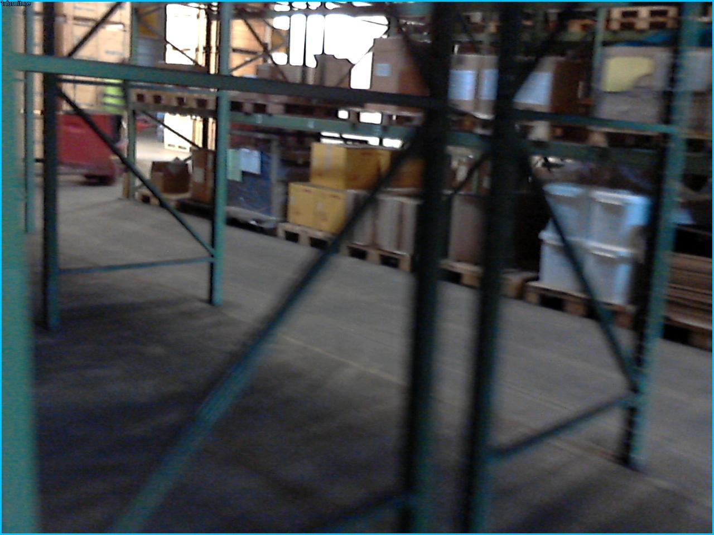
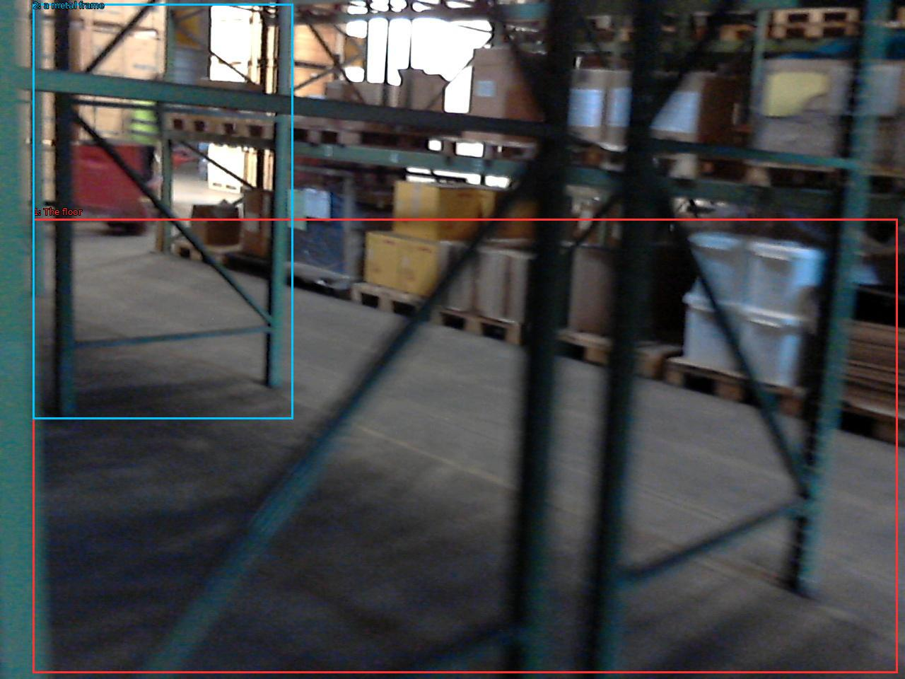

The image shows a large warehouse with multiple shelves and racks. The shelves are filled with cardboard boxes and other items. The floor is made of concrete and there is a metal frame in the foreground. The warehouse appears to be well-lit with natural light coming in from the windows on the left side of the image. The image is taken from a low angle, looking up at the shelves.


Original · Caption raw · Grounding raw · Koordinate
Številke so lokalni ID regije. Dolge slikovne oznake so skrajšane; spodaj so celotne fraze. Napovedane regije se lahko prekrivajo ali opisujejo skupine.
| ID | Celotna fraza | bbox xyxy |
|---|---|---|
| 1 | The floor | [46.71999740600586, 309.6000061035156, 1269.1199951171875, 951.8399658203125] |
| 2 | a metal frame | [46.71999740600586, 5.279999732971191, 414.0799865722656, 592.7999877929688] |